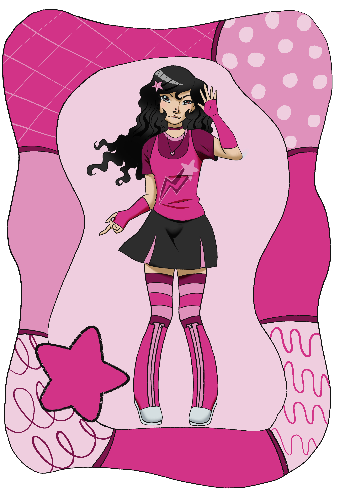

Quem é Bianca?
Bianca é uma garota que adora tudo o que for colorido e alegre. Tendo uma personalidade divertida, ela junto com suas amigas, gosta de desenhar historinhas engraçadas sobre os personagens que criou.
Adora passar seus dias com seus amigos, principalmente Gabriella e Clara, já que as três tem interesses muito parecidos, como gostar de desenhar, assistir animações e fazer coisas sem sentido pela a escola. Ela tem dificuldade de interagir com pessoas novas, então quando Raphael começou a andar com seus amigos, foi uma daptação lenta, mas no fim ela viu que ele não era como aparentava ser, e começaram a se dar bem.